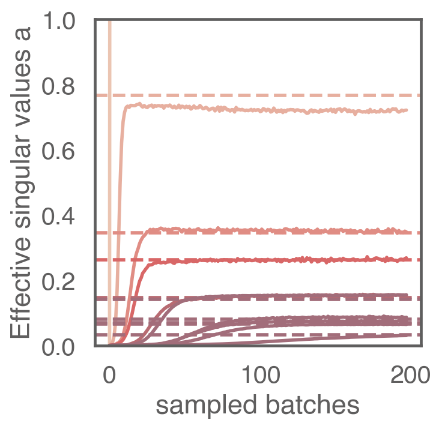

I'm currently developing a small website to put here.
See you soon!

zero-padding
he-uniform initializer * 0.1 (different dynamics for different initializers!)
batchsize 32
deep, linear:
2D conv, 16 output channels, 8x8, no activation
2D conv, 16 output channels, 8x8, no activation
2D conv, 16 output channels, 8x8, no activation
2D conv, 16 output channels, 8x8, no activation
fully connected, 16 nodes, no activation
fully connected, 10 nodes, no activation
deep, non-linear:
2D conv, 16 output channels, 8x8, Relu
2D conv, 16 output channels, 8x8, Relu
maxpool 2x2
2D conv, 16 output channels, 8x8, Relu
2D conv, 16 output channels, 8x8, Relu
maxpool 2x2
fully connected, 16 nodes, Relu
fully connected, 10 nodes, no activation